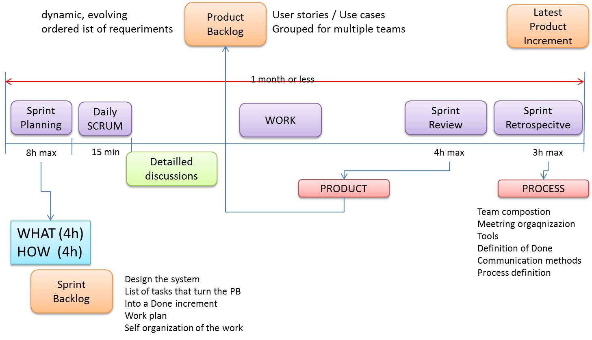

72939 - LAB11 | The RobotRadar system
LabISS-lectures siteIndex
- Requirements
- Domain (IOT)
- Methodology
- Requirement Analysis
- A first model of the system Architecture
- Problem Analysis
- Logical Architecture
- Project
Requirements
Design and build a software systems (named ddrworker ) that allows an human user to interact with a single Differential Drive Robot (DDR)
by using a remote console (running on a conventional PC or on a Smart Device) in order to:
- sendMoveCmds: send commands to move a DDR that could be a
virtual or areal robot , with reference to the resources already available. - receiveSensorInfo: receive information from the
HC-SR04 sonar sensor mounted on the robot and from the sonars (if they exists) present in the robot working environment. - showSonarData: show data coming forn the sonar-sensor on a radar GUI:

- handleConds: allow the robot to
stop its behavior under some specific condition, like for example an alarm emitted by some external entity, or when the ambient temperature overcomes a given limit value or when the robot hits an obstacle.
This system is intended to be a starting step towards the development of
Internet of things(IOT) applications.
See the section: The Application Domain
Resources already available
Besides the (open-source) software available from Internet, we can use software already developed by our company, and in particular:- A virtual environment (named
WEnv ) built in JavaScript, that includes a virtual robot that accepts commands sent on a TCP connection on port 8999. See Lab9.html - A basic robot control software for physical ddr robots (
BaseRobot ), modeled as an observable POJO. See UsingRobots2019.pdf sections 3 and 4. - A software system written in Java that simulates the screen of a
radar . The project it.unibo.java.radar implements a software system able to display distance values on an output device that simulates the screen of a radar. The deployment file is radarPojo.jar .
Basic questions
Let us recall a set of basic questions that we can pose to ourselves at the starting of each new project.- Incremental development: Is it possible to organize the production in terms of a sequence of systems, each facing a more wide/complex
set of requirements so that each system can be designed and built as the
incremental evolution of the previous one? - Top-down or bottom up?: What is our starting point? Do we start by what is already available (by following a bottom-up approach) or do we follow a top-down approach that first detects a logic architecture of the system and afterward selects the technology?
we will not start from any available software, with the intent to discover what are the most appropriate resources
able to satisfy our needs after the analysis of the requirements and of the problem.
Methodology


Technology (in)dependency and modeling
In the first phase of our development, we want to be technology-aware but also as much technology-independent as possible. To achieve such a goal, we will start by building a conceptual model of the system. From https://en.wikipedia.org/wiki/Systems_modeling we read:
A model is a representation of a system, made of the composition of concepts which are used to help
people know, understand, or simulate a subject the model represents.
A Product Backlog
According to the SCRUM framework of software development, we will suppose that the product backlog defined by the Product Owner allows us to satisfy the set of requirements in incremental way, by distinguishing among a set of macro-steps. More precisely, we will follow a '- The first step defines the main components of the logic architecture of the systems, by focusing on their
interaction. In this phase, the behavior of each component should be simply 'simulated' in order to reproduce a set of
interaction patterns, with the aim to introduce a proper set of initial (integration, functional)
Test-Plans . - Refine the logical architecture defined in the previous step, by including code that satisfies the requirements in more detailed way or that satisfies more functional requirements. .
Logical Architecture
For logical architecture we intend here a software architecture that is defined as consequence of the requirement/problem analysis phase, in the attempt to focus our attentionThe logical architecture will be progressively 'zoomed' into a project architecture and a proper implementation and deployment.
The incremental approach will lead us to define a sequence of (QActor) models, that can be used as the reference point for a sequence of SCRUM
Requirement Analysis
After the (several) meetings with the customer, we can say that:- Our software system is a
distributed system composed by two main entities: a console running on a consoleNode that can be a PC or on a SmartDevice and a (real or virtual) robot, running on its own robotNode. - The robot is equipped with a sonar (sonar-robot) put in front of it. Other sensors are, at the moment, excluded for costs reason.
- To understand (or formally define) what is the meaning of the term
robot , we must read UsingRobots2019.pdf. - The software running on the consoleNode must allow the end-user to control the robot with very simple commands (e.g. w, a, s, d, h).
- A console running on a Smart Device could be conceived as a Application or as user-GUI running into
Browser . - The software running on the robotNode must execute the commands sent by the human-user via the console and must be sensible to a set of conditions. Let us name, from now on, such a set with the term envConds.
- The envConds set is actually given only with reference to examples, i.e. it is not clearly defined. However, the given examples
suggest two different type of conditions:
- conditions related the world external to the system, e.g. alarms and temperature;
- conditions that arise form the work of the system itself, e.g. fining an obstacle.
- It is not clear whether the radarGUI is shown in the console or it is a different system. From resources already available we can assume that we can/should use the library radarPojo.jar.
A first model of the system Architecture
At this stage, the system architecture can be represented as in the following, informal picture:|
|
|
A first model (towards Requirements traceability )
A better specification of the system architecture can be given by introducing a model written in a machine-understandable language.
For example, a
QActor
specification allows us to introduce a description that associates each running component (actor) with the requirements
(see Requirements traceability):
------------------------------------------------------------------------------------------------------------------------------ System ddrworker Event envCond : envCond( CONDTYPE ) //from the environment Event sonar : sonar(SONAR, DISTANCE) //from sonar in the robot environment Event sonarRobot: sonar( DISTANCE ) //from sonar on robot Dispatch robotCmd : robotCmd(X) //from console to robot Dispatch polar : p( Distance, Angle ) //from robot to radar ContextctxRobotReq ip [host="localhost" port=8025]//requirements: QActorhuman user interaction, sendMoveCmds consolereq context ctxRobotReq{//Provides a user GUI and }Forwards robotCmd to robotplayerreq//requirements: QActorsendMoveCmds.move, handleConds, receiveSensorInfo, showSonarData robotreq context ctxRobotReq{/* Handles */ }robotCmd ,sonar envCond ; moves the robot andForwards polar to radarreq//requirements: QActorshowSonarData radarreq context ctxRobotReq{//Uses } ------------------------------------------------------------------------------------------------------------------------------radarPojo.jar to show sonar data
|
|
- The names of the actors ends with the suffix
req to recall that they are part of the first model, related to our requirement analysis. These names will change in our next model refinements. - The responsibility to satisfy the requirements is already distributed among the actors.
- Data identified with the names
userCmd ,robotCmd andpolar are defined as Dispatches. In fact, from the requirements, we deduce that each of them has a specific destination. - Data identified with the names
envCond andsonar are defined each as Events. In fact,envCond models information generated by the 'world' outside the system, whilesonar is information generated by the virtual robot. In both cases, the entity that generates this data cannot known the names of the actors working in our system.
Problem analysis
The main goal of problem analysis can be summarized as follows:- understand the (technical) problems posed by the requirements;
- identify the best tools/libraries/supports etc. necessary and/or useful for building the system;
- clarify the constraints (human, technical, economical, etc.) related to both the software product to build and the software production process;
- define a
logical architecture of the system and a first working prototype to show to the customer at the end of our first sprint.
In our case, we can say that:
- The system is distributed and
effective operational supports are required. At the current state of the art, there are several possible candidates, whose number is increasing. We will start from the support given by the QAk-infrastructure. In a second moment, when the requirements and the consequent logic of the system will be more stable, we will discuss how to introduce other, different supports, with particular reference to MQTT and Web. - The system requires a GUI for human-user interaction that can be created by the
console component. The GUI can be a built by reusing a POJO already available, with the addition of an adapter to send information to theconsole . A possible adapter can be guiSupport.kt that sends the dispatch:Dispatch
userCmd : userCmd(X) //with X = w | a | s | d | h - The
robot component represents the control part of the system. To make such a control independent form the particular type of robot to move (virtual, real-mbot, real-nano, etc.) it is opportune to introduce a resource robotSupport.kt working as a robot- facade.
- The
robot control must work as a proactive/reactive component, since it must execute user commands without loosing the capability to react to envCond events and to update the radar. With reference to the motto divide et impera, it is opportune to distribute some responsibility by introducing another actor to handlesonar events and to interact with the radar://requirements: QActorsendMoveCmds.move, handleConds robotreq context ctxRobotReq{// Handles robotCmd ,envCond ; moves the robot }//requirements: QActorreceiveSensorInfo, showSonarData sonarhandler context ctxRobotReq{//Handles }sonar andForwards polar to radarreq - The
radar actor must show on the radar-GUI the sonar data enclosed in the dispatchpolar : p( Distance, Angle ) . To this end, it can reuse the POJO facade given by the library radarPojo.jar:package radarPojo; import it.unibo.radar.common.RadarControl; public class radarSupport { private static RadarControl radarControl; public static voidsetUpRadarGui ( ) { try { radarControl = new RadarControl( null ); } catch (Exception e) { e.printStackTrace(); } } public static voidupdate ( String dist, String theta ){ if( radarControl != null ) radarControl.update( dist, theta ); } } - The problem of a GUI for a smart device is not trivial, since the development of an Application requires effort and probably introduces technology lock-in. On the other side, a browser-based implementation of the user-GUI requires the introduction of a Web infrastructure. Let us postpone this problem to a next sprint.
Logical architecture
With the help of the supports built after the problem analysis phase, we can define in more detail the logical architecture of the system and our first working prototype. Let us start from the declaration of the messages and events:Event envCond : envCond( CONDTYPE ) //from the environment (simulated) Event sonar : sonar(SONAR, DISTANCE) //from sonar in the robot environment Event sonarRobot: sonar( DISTANCE ) //from sonar on robot Dispatch userCmd : userCmd(X) //from GUI to console Dispatch robotCmd : robotCmd(X) //from console to robot Dispatch polar : p( Distance, Angle ) //from robot to radarLet us start from the actor that captures our business logic.
The robot
The principal actor of our system is a proactive/reactive component that executes user commands without loosing the capability to react toThis version of theQActor robotreqcontext ctxRobotReq{State s0initial {run resources.robotSupport.create( myself, "virtual" ) }Goto waitCmdState waitCmd{ }Transition t0whenMsg robotCmd -> handleCmdwhenEvent envCond -> handleCondState handleCmd{onMsg ( robotCmd : robotCmd(CMD) ){run resources.robotSupport.move( "msg(${payloadArg(0)})" ) } }Goto waitCmdState handleCond{run resources.robotSupport.move( "msg(stop)" ) }Goto waitCmd }
The sonarhandler
State waitForEvents{ }
Transition t0 whenEvent sonar -> sendToRadar
whenEvent sonarRobot -> sendToRadar
State sendToRadar{
printCurrentMessage
onMsg ( sonar : sonar( SONAR, DISTANCE ) ){
[" val D = Integer.parseInt( payloadArg(1) ) * 5"]
forward radarreq -m polar : p( $D, 90 )
}
onMsg ( sonarRobot : sonar( DISTANCE ) ){
[" val D = Integer.parseInt( payloadArg(0) ) * 5"]
forward radarreq -m polar : p( $D, 180 )
}
}
Goto waitForEvents
The full code is in robotWorker.qak.
Project
Here we:- Provide the proper support for the different types of robots.
- Distribute the actors into proper different contexts.
- Test the system on the network.
- Substitute the QAk-infrastructure with a MQTT support.
- Define a better GUI and/or a GUI for a
smart device . - Refactor the
robot control according to the MVC design pattern.